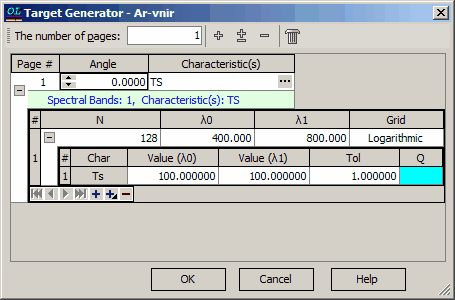
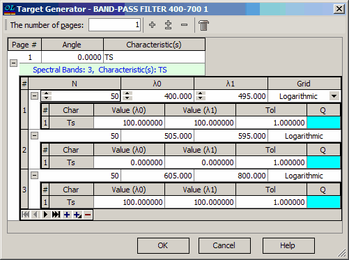
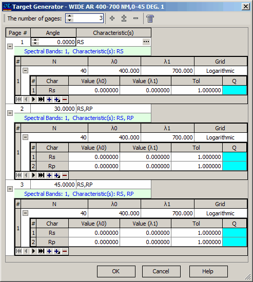

Target Generator
Target Generator
Navigation: OptiLayer Menu Commands > Data Menu > Target Editor >
Target Generator
` <idh_modify_wavelengths.html>`__ ` <target_editor.html>`__ ` <phasegdgdd_target_generator.html>`__

The Target Generator dialog enables the specification of a complex target in terms of angular planes and spectral bands. For each spectral band, you can define the target characteristics of interest, their starting and ending values, and the number of spectral points. At the top of this dialog, you can specify the total number of planes. Additional controls are available to expand and collapse child levels within this dialog. The Column Editor can also be accessed in this dialog using a special button. On the first level of the dialog, for each plane, you can specify the angle of incidence and a set of target characteristics. The child levels adjust automatically based on the specified parameters. On the second level of the dialog, you can insert, append, and remove spectral bands for each plane using control buttons. Each band can have a different number of spectral points (N) and different starting and ending wavelength values (λ0 and λ1). The type of spectral point distribution should be specified in the “Grid” column and can be Logarithmic, Linear, or Inversely Proportional. At the third level of the dialog, you can specify starting and ending values for each target characteristic, along with corresponding tolerance values and qualifiers. When target values are computed for wavelength values within each band, linear interpolation is used. Clicking the OK button will initiate the Target Generator procedure, which will replace the current target editor content with the newly created target.
Example 1
To quickly create a target for the Advanced Example LEC03D7 in the Target Generator dialog, you can use the following settings:

Only one plane is utilized, featuring three bands for the TS characteristic under normal incidence. Each band consists of 50 logarithmically distributed spectral points. The first band ranges from λ0=400 nm to λ1=495 nm, with TS values set to 100%. The second band covers λ0=505 nm to λ1=595 nm, with TS values set to 0%. The third band extends from λ0=605 nm to λ1=800 nm, with TS values once again set to 100%.
Example 2
Target for the Advanced Example LEC03D5 can be quickly created with the following settings in the Target Generator dialog (all levels are expanded):

In this example, three planes with different angles of incidence 0°, 30°, and 45° are specified, each having different characteristics. Each plane is equipped with 40 spectral points logarithmically distributed in the range from 400 nm to 700 nm. The target reflectances are set to zero values for each plane and each band.